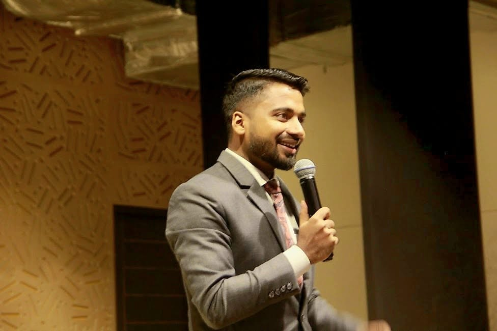
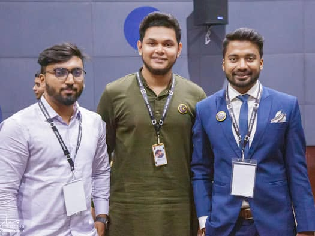
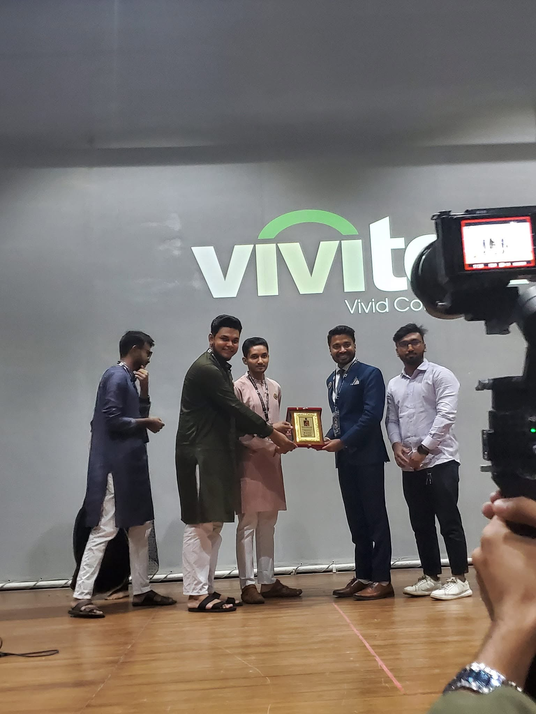

Work that reaches
beyond a profile
or a session.
Helping people become more prepared, better positioned and more intentional about their future.
Professionals supported in developing professional profiles and presenting their experience more effectively.
Professionals supported through career counselling, career suggestions and professional guidance.
Students reached through career-awareness sessions designed to encourage more serious thinking about choices, skills and preparation.
Students supported through internship and volunteer development experiences connected with Speech Masters Bangladesh.

A broader career-development ecosystem.
I founded Careers Up to help professionals move forward with stronger career clarity, better professional positioning and greater visibility.
Its work connects career diagnosis, career consulting, personal branding, professional profile development and executive positioning.
My long-term vision is to contribute to a stronger career ecosystem where important career decisions are based on better information, better guidance and a clearer understanding of professional value.
Founder & CEO · Careers UpExposure creates readiness.
Alongside my professional work, Speech Masters Bangladesh has provided young people with opportunities for practical exposure, volunteering, internships and career preparation.
Career development is not only about advice. Young people also need environments where they can practise communication, responsibility, teamwork and professional behaviour.
Evidence builds stronger trust than claims.
Real moments from professional events, networking and recognition.

